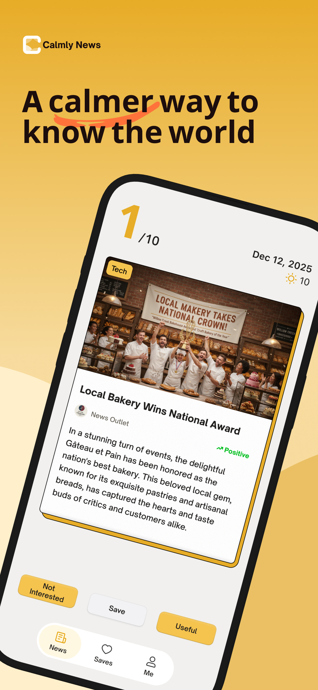
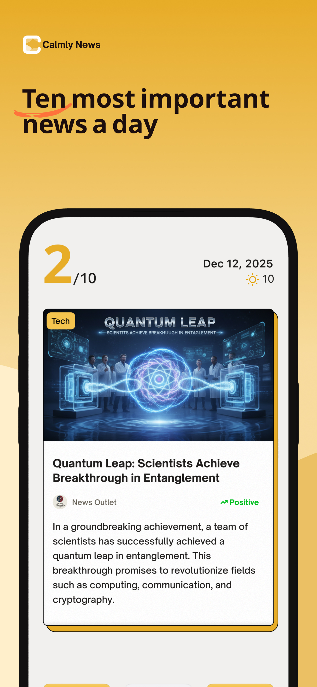
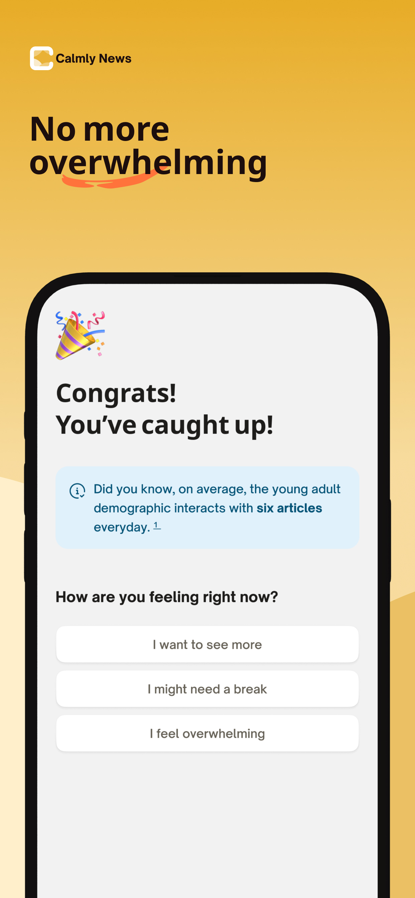
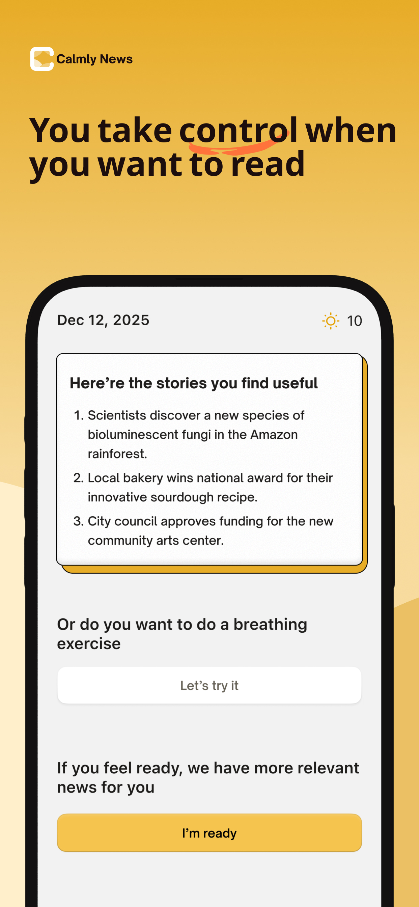
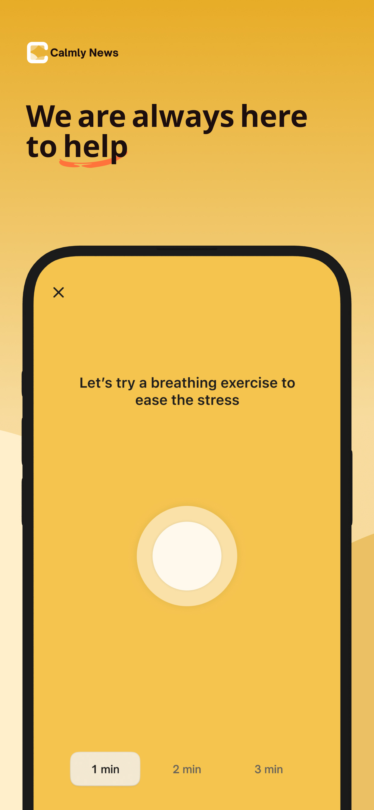

Calmly News
Overview
Most news apps are designed to keep you addicted. We built Calmly News to do the opposite: keep you informed, and then help you get off your phone.
We call it a "cooling system" for your digital life. It's not about ignoring the world; it's about engaging with it without burning out.
How it works:
- Just the facts: We use AI to strip away the "drama adjectives" and emotional language. You get the actual news, not the clickbait designed to make you angry or scared.
- The Rule of 10: You don't need an endless feed. We limit you to the 10 most important stories of the day. Once you read them, the feed locks. You're done.
- Mental Reset: Some news is just heavy. We've built in simple tools—like breathing exercises—to help you decompress immediately after reading a difficult story.
- Filter your triggers: You decide what you see. Easily block specific topics or keywords that you aren't in the headspace to handle right now.
Mental health isn't about hiding from the truth. It's about having the emotional capacity to handle it.
Key Features
- AI-Powered Content Filtering: Strip away emotional language and drama adjectives to get just the facts.
- The Rule of 10: Limited to the 10 most important stories per day. Once read, the feed locks—no endless scrolling.
- Mental Reset Tools: Built-in breathing exercises and decompression tools for difficult stories.
- Customizable Filters: Block specific topics or keywords that you're not ready to handle.
- Mindful Consumption: Designed to keep you informed without addiction or burnout.
App Screenshots





App Store Links
- Website: Calmly News
- Google Play: Calmly News
- App Store: Calmly News